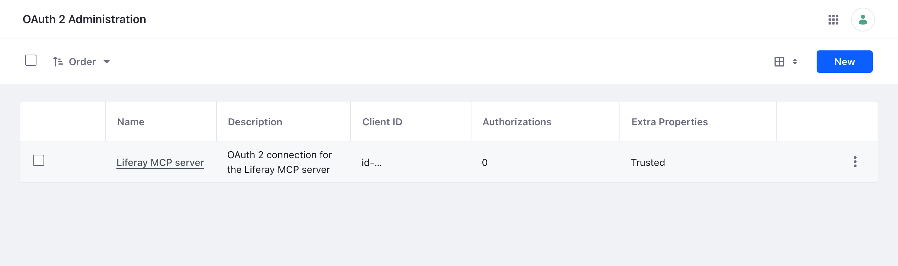

Installing on Liferay Self-Hosted (Docker)
Liferay runs in a container, and the server runs in a second container that shares Liferay’s network, so it reaches Liferay at localhost:8080 as on a server. You copy the OAuth 2 client extension into the running Liferay container.
You need Docker, the service user, and Liferay must be running. The commands use liferay as the name of Liferay’s container; use yours.
- Step 1: Give Liferay a Routes Volume
- Step 2: Deploy the OAuth 2 Client Extension
- Step 3: Run the Server
- Day to Day
- Related Information
Step 1: Give Liferay a Routes Volume
Liferay writes the server’s credentials to /opt/liferay/routes in its container. Start Liferay with a volume there, so the server’s container can read them, and with the server’s port published, if people or services will reach the server over HTTPS:
docker run -d --name liferay -p 8080:8080 -p 127.0.0.1:3333:3333 --restart unless-stopped \
-v liferay-data:/opt/liferay/data \
-v liferay-routes:/opt/liferay/routes \
liferay/dxp:2025.q1.29-lts
Add your own settings, such as the database, as usual. If your Liferay container already runs without these, start a new one with them, keeping its data volume.
Step 2: Deploy the OAuth 2 Client Extension
-
Download
liferay-mcp-oauth.zip, and copy it into the running container:docker cp liferay-mcp-oauth.zip liferay:/opt/liferay/osgi/client-extensions/ -
Wait until
docker logs liferayshowsSTARTED liferay-mcp-oauth, then check that the credentials are there:docker exec liferay ls /opt/liferay/routes/default/liferay-mcp-oauth
Liferay creates an OAuth 2 application named Liferay MCP server, shown in Control Panel → Security → OAuth 2 Administration, which acts as the service user:

Step 3: Run the Server
The server’s container joins Liferay’s network (--network container:liferay), and reads the routes from Liferay’s volume. Both run as user ID 1000, so no copy is needed.
-
Shared, over HTTPS:
docker run -d --name liferay-mcp --restart unless-stopped --network container:liferay \ -v liferay-routes:/opt/liferay/routes:ro \ -v liferay-mcp-secrets:/run/mcp-secrets:ro \ -v liferay-mcp-data:/data \ -e LIFERAY_URL=http://localhost:8080 \ -e LIFERAY_ROUTES_CLIENT_EXTENSION=/opt/liferay/routes/default/liferay-mcp-oauth \ -e MCP_HTTP_HOST=0.0.0.0 \ -e MCP_PUBLIC_URL=https://mcp.example.com \ -e MCP_TRUST_PROXY=private \ -e MCP_HTTP_API_KEYS_FILE=/run/mcp-secrets/api-keys \ ghcr.io/liferay-community-apac/liferay-legacy-mcp:1.1.0-slim --httpIt’s reachable at
127.0.0.1:3333on the Docker host, through the port Liferay’s container publishes. Put your HTTPS reverse proxy forhttps://mcp.example.comin front of it, and follow For Services and People for API keys and sign-in. -
For a person on the Docker host, with Claude Code: the same container, started by Claude Code, as in With Claude Code:
claude mcp add liferay-legacy -- docker run -i --rm --network container:liferay \ -v liferay-routes:/opt/liferay/routes:ro \ -e LIFERAY_URL=http://localhost:8080 \ -e LIFERAY_ROUTES_CLIENT_EXTENSION=/opt/liferay/routes/default/liferay-mcp-oauth \ -e LIFERAY_DEFAULT_SITE=my-site \ ghcr.io/liferay-community-apac/liferay-legacy-mcp:1.1.0-slim -
On another computer: copy the credentials out with
docker cp liferay:/opt/liferay/routes/default/liferay-mcp-oauth ., give them to the person securely, and setLIFERAY_URLto your Liferay’s address.
Checked on Liferay DXP 2025.Q1.29 in Docker: the zip created the application and its credentials within seconds, and the server, in a container sharing Liferay’s network, connected with OAuth 2 and all nine scopes, both started by Claude Code and as the shared HTTPS server. Reached at the Liferay container’s network address, as a published port is, the HTTPS server refused a request without a key or with a wrong one (401), and answered one with a key made as in For Services and People.
Day to Day
- After Liferay’s container restarts, restart the server’s container too, since it shares Liferay’s network:
docker restart liferay-mcp. - If you replace Liferay’s container, the client extension zip goes with it: copy it in again as in Step 2. The routes volume keeps the credentials, but Liferay issues new ones when the zip is deployed again, so restart the server afterwards.